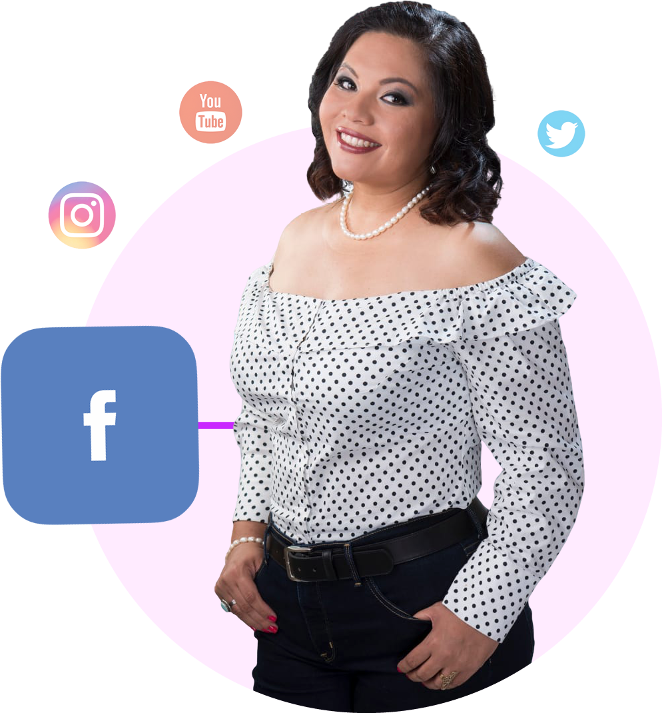
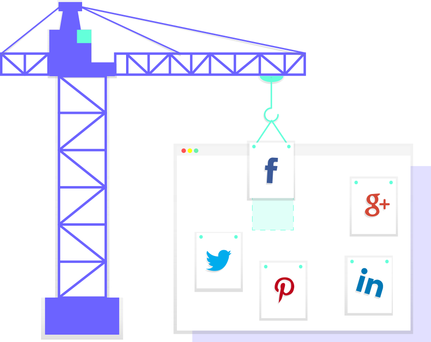
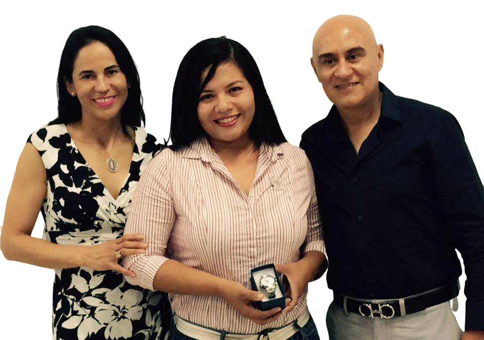
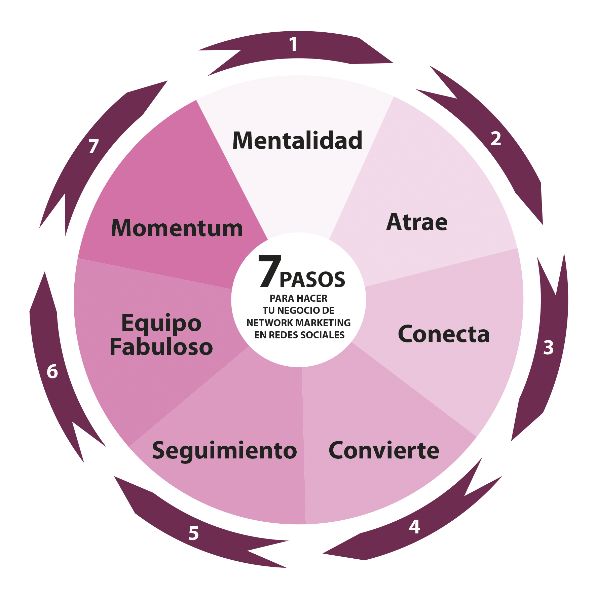

¡Me emociona presentarte la opción de llevar tu estrategia de Marketing al mundo online usando redes Sociales
Informacion
Mi nombre es Sonia Rodríguez y estoy feliz de que hoy nuestras vidas se crucen! Y antes de decirte más Acerca de mí.... permíteme hacerte una pregunta: ¿Alguna vez te has preguntado si hay algo MÁS para ti? Porque ¿sabes? esto fue lo que a mí me ocurrió.
Mi mentalidad comenzó a cambiar cuando leí el libro "Semana laboral de 4 Horas" de Tim Ferriss.
La idea de ganar dinero, y disfrutar de un estilo de vida con libertad era sumamente atractivo para mí. Comencé a preguntarme ¿por qué yo no? ¿realmente tengo que pasar mi vida tantas horas trabajando sin disfrutar a mi familia, sin ir al gym, sin viajar?
Trabajé como empleada Corporativa por más de 20 años. En mi último empleo estuve ocho años y mi trabajo consistía en elaborar y mantener Programas de Construcción de Plataformas Marinas. Me encantaba mi trabajo, sin embargo, eran hasta 14 horas diarias las que tenía que estar fuera de casa y si eres mamá entenderás que llegó el momento en que sentía que no debía estar ahí.
Así que comencé a buscar opciones de "trabajos en casa", ya sabes, intenté varias cosas: venta de maquillajes, bolsas, malteadas, productos de cocina, incluso productos virtuales. Y digo intenté porque no me entrenaba, sólo brincaba de un negocio a otro sin tener idea de lo que hacía. Estuve a punto de rendirme varias veces! Hasta que un día me tomé las cosas en serio y DECIDÍ que quería hacer Network Marketing de una forma profesional.
Comencé a entrenarme y a aplicar lo aprendido. Entre mis mentores favoritos están: Ray Higdon, Jessica Higdon, John Melton, Nadya Melton y Tanya Aliza. Yo pensaba, si todos ellos han tenido éxito...¿por qué yo no? Tengo que investigar qué hicieron y modelar sus acciones. Así lo hice! Y lo que me gustó más fue el sistema que enseñan de ATRAER personas usando estrategias de Marketing de Atracción Online.
Me encantó la idea de hacer mi negocio desde mi computadora y teléfono, prácticamente desde cualquier lugar donde tenga internet 🙂 Así que DECIDÍ especializarme en Facebook como mi principal herramienta de prospección.
Con constancia, disciplina y mucho trabajo ,actualmente tengo mi negocio desde casa, he ganado bonos en mi compañía, tengo clientes, patrocino todo los meses, he alcanzado rangos y estoy formando un equipo fabuloso. Y lo mejor de todo es que lo hago desde "casa", con mis dos pequeños hijos.

* Si estás buscando un Equipo de Trabajo en una compañía de Network Marketing, tal vez te interese saber acerca de mi propuesa.
Ingrese aquíSi ya tienes un negocio, pero deseas entrenamiento, tal vez te interese ver el webinar "Sistema para Prospectar en Facebook" y unirte a La Academia.
Ingrese aquí
$37 USDMENSUAL
$297 USDANUAL
$597 USDÚnico pago
Si ya tienes un negocio y deseas entrenamiento grupal, la Academia sin Excusas es una Comunidad de Emprendedoras que cada Viernes recibe un nuevo entrenamiento.
Si estas en busca de un negocio, te encantan los temas de salud y estas abierta a aprender un sistema para hacerlo desde facebook, quizá consideres trabajar directamente conmigo en mi negocio de network marketing,
Hey Rockstar!!!
Me encanta ayudar a otras emprendedoras a mejorar sus estrategias de Marketing y Prospección. En este sitio encontrarás muchas ideas para triunfar en tu negocio y a la vez disfrutar de un fabuloso estilo de vida.
¿Cómo tener un negocio millonario de Network Marketing? Entrevista a John Melton
Leer mas¿En qué enfocarte?..estos días.. con relación a tu negocio de Network Marketing.
Leer mas